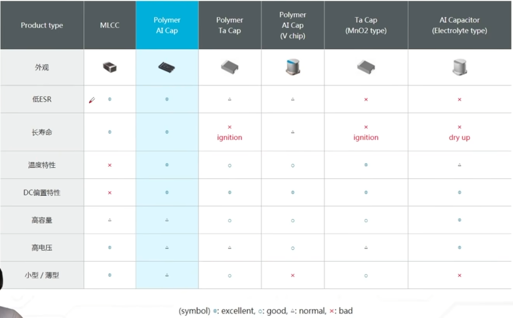
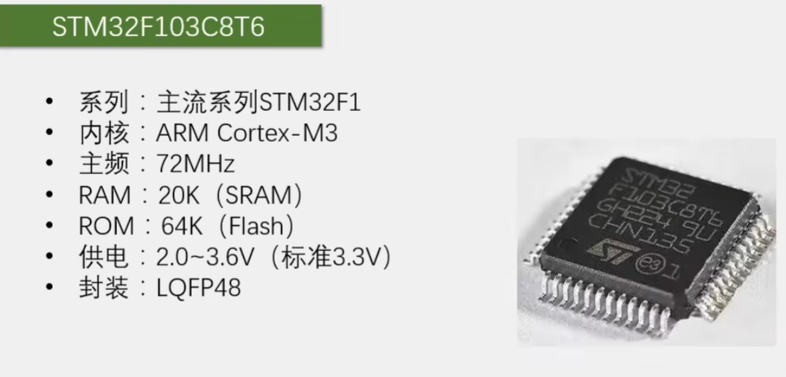
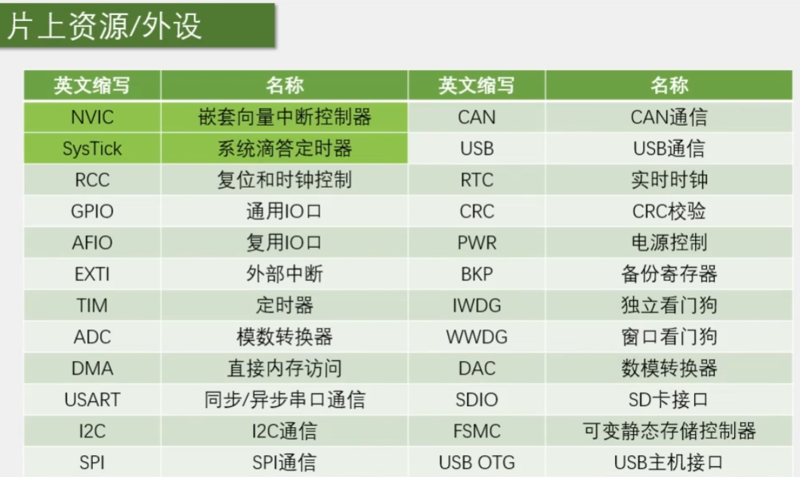
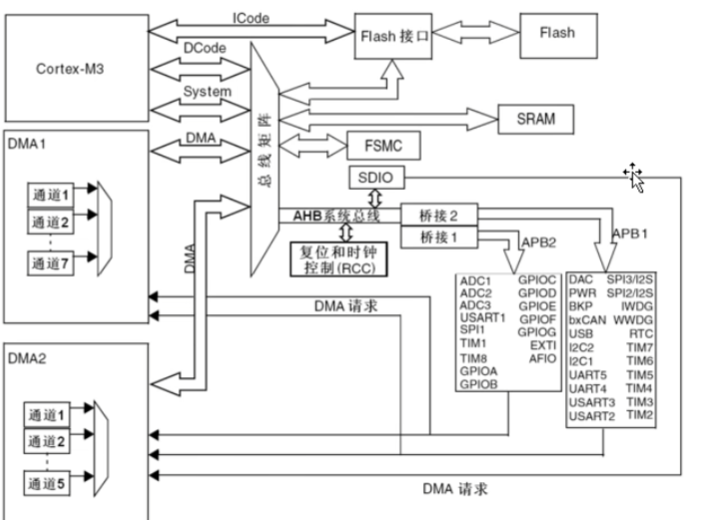
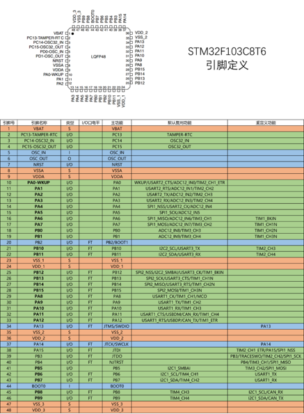

嵌入式学习记录（新）
电子online 硬件工程师入门教程（https://www.bilibili.com/video/BV1gHSyY3E6q?p=10&vd_source=c8fd9a926f52bb7d1b03d61054458801）
单片机的复位引脚是低电平有效的
弱上拉电阻一般10k
电容
电解电容是分正负的，长的是正极断的是负极。
电容是会炸的！！反接或者超过额定电压都会炸，炸之前电流会逐步上升。
固态电解电容温度特性会好很多。
cbb电容没有正负，耐压可以做到很高，高频特性也可以做的很好。

重要特性：两端电压不能突变
注意是相对电压不能突变，但是两端电压可以同时突变。
计算时可以先把电容看成导线，得到两端电压。
电容的储能特性
电容可以理解为一个小电池，电容的充电速度与电容大小以及充电电流有关。
$$
充电时间常数:\tau = R * C
$$
RC电路，实现充电延时、关断延时。
电容的稳压功能和滤波功能
为什么很多电路和芯片上都要加电容？减小电压跌落。
电容的容抗计算公式
$$
R_c = \frac{1}{2\pi fc}
$$
STM32入门教程-2023版 细致讲解 中文字幕（https://www.bilibili.com/video/BV1th411z7sn?p=4&vd_source=c8fd9a926f52bb7d1b03d61054458801）
STM32简介
STM32是ST公司基于ARMCortex-M内核开发的32位微控制器。
四种系列：高性能、主流、低功耗、无线系列


深颜色是位于cortex内核里面的外设，浅颜色是内核外的外设。

Icode：指令总线，Dcode数据总线，System系统总线。SRAM存储程序运行时的变量数据。
AHB：先进高性能总线，挂载最基本或者最重要的外设。
APB：先进外设总线，APB2性能高于APB1。
DMA：类似内核CPU的小秘书。

红色：电源相关引脚；蓝色：最小系统相关引脚；绿色：IO口，功能口等。
FT代表能容忍5V电压，没有就代表3.3V。
本博客所有文章除特别声明外，均采用 CC BY-NC-SA 4.0 许可协议。转载请注明来自 Ystein！